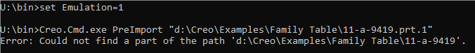

Setting environment variable Emulation = 1 before running any of the above commands activates the emulation mode. This is to make the Praxis simulate the workflow on systems where Creo Parametric is not installed.
For the PreImport emulation, a pre-processed output folder with the same Creo part name containing the exploded part files, should be placed in the same folder as the part file. If placed, tool works as normal. If not, the following exception is shown.

To revert to the normal mode, set Emulation = 0